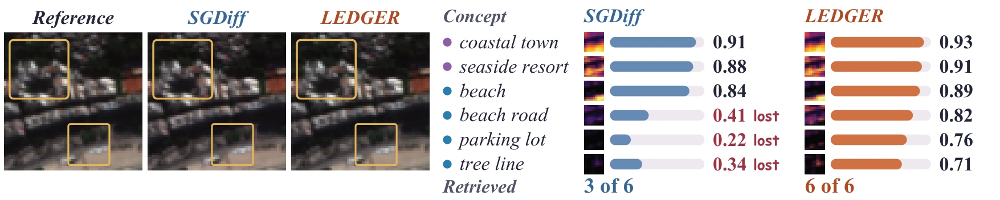

Latest paper / Nov 2026 / 第一作者
Close the Loop on the Retrievability Gap
两张卫星图，画质分数相同，只有一张还能搜到海边的停车场。我们把检索放进图像复原的训练环节，让小目标也能影响生成结果。


我在新加坡国立大学–清华大学下一代搜索技术联合中心读研，有幸得到沈飞老师和蔡达成教授（Tat-Seng Chua，新加坡科学院院士）的指导。
我最早做图文检索时，常遇到这样的例子：两张图都符合描述，决定哪张排在前面的，是一句话里很容易忽略的细节。现在我仍然关心这些细节的去向。视觉语言模型会用到哪些证据？智能体会把哪些经验留给下一次决策？任务变长以后，这些信息又能保留多久？
Latest paper / Nov 2026 / 第一作者
两张卫星图，画质分数相同，只有一张还能搜到海边的停车场。我们把检索放进图像复原的训练环节，让小目标也能影响生成结果。

从图文匹配到图像复原，我关心一幅图里有哪些细节能被文字找回，也想弄清楚模型在回答时何时会忽略眼前的证据。
一次工具调用成功，可能只是碰巧。模型将来再遇到类似任务时，需要知道当时为何成功、哪些条件已经改变。
任务越长，保存整段历史和反复推理就越昂贵。我研究哪些历史值得占用缓存，以及多跑一轮计算究竟能推进几步。
长期来看，我希望把这三条线连起来，让多模态智能体既能从交互中积累经验，也能在环境变化时重新判断。欢迎做视觉语言模型、Agent RL 和高效推理的朋友来交流。

当模型坚持说图里有一个并不存在的物体，哪些内部组件影响了判断？我们在五种视觉语言模型中逐层干预，发现同一组视觉定位组件在答对和产生幻觉时，甚至会支持相反的答案。定向抑制幻觉通路后，POPE 对抗测试上的对象幻觉最多减少了 76%。

一次操作碰巧成功，Agent 很可能把错误的做法也记下来。MemGuard 把验证结论和置信度随经验保存。下次遇到类似任务，Agent 可以回查依据、处理冲突，也能从过去的失败中找出该避开的做法。在四个基座模型与四个基准的全部组合上，成功率指标均居首位，平均动作步数也最少。

用世界模型训练机器人策略，怎样判断它生成的轨迹有没有用？DRILL 让策略先在想象轨迹上做一次 GRPO 更新，再用它在仿真环境中执行任务的回报训练世界模型。在五个操作环境中，π₀-3B 的平均任务成功率从 WMPO 的 59.4% 提高到 72.5%。

把同一组网络层多跑几轮，模型会沿着任务多走几步吗？我们让第 k 轮预测做完前 k 步的状态，并把每轮的隐状态尺度校准到首轮。在物品交换任务上，0.5B 模型训练时最多见过 32 步，测试拉长到 512 步，仍有 95.5% 的样本能答对所有物品的位置。
硕士阶段在组内研究多模态检索与基础模型。LEDGER 源于此前做图像融合时留下的一个问题：生成器保住了多少下游任务真正需要的信息？
在蚂蚁集团技术研究院人工智能实验室研究循环语言模型与长程推理。参与主导 PAR 的方法设计与训练实现，并研究面向智能体的 KV 缓存压缩。
在微软亚洲研究院暑校与来自不同学校的同学合作。随后继续研究视觉证据与对象幻觉，并把问题拓展到世界模型和策略学习。
本科期间在山东大学信息检索实验室开展科研，参与山东省数字媒体技术重点实验室联合培养。在陈竹敏教授指导下研究图文检索、跨模态语义对齐与细粒度情感分析。
NeurIPS 2026 Scholar Financial Award
担任 NeurIPS、ICLR、WWW、ACL ARR、CVPR、WACV、IEEE ICASSP 等会议及 IEEE TDSC 的审稿人或程序委员会成员。
小时候学围棋，拿到过业余五段。现在仍喜欢下棋，也吹萨克斯、游泳、徒步，偶尔跑半马。